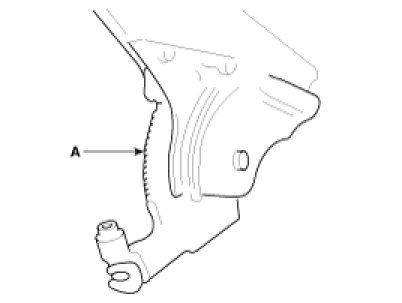
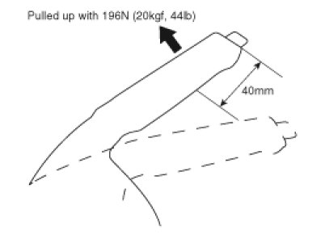
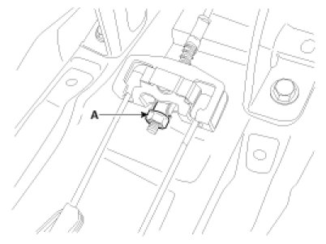

Parking Brake Pedal: Adjustments
Adjustment
Parking Brake Lever Stroke Adjustment
1. Remove the floor console.
2. Apply a coating of the specified grease to each sliding parts (A) of the ratchet plate or the ratchet pawl.
Specified grease :
Multi purpose grease SAE J310, NLGI No.2

3. Install the parking brake cable adjuster, then adjust the parking brake lever stroke by turning adjusting nut (A).
Parking brake lever stroke :
5 - 7 clicks (Pull the lever with 196N (20 kgf, 44 lbf))
NOTE:
After repairing the parking brake shoe, adjust the brake shoe clearance, and then adjust the parking brake lever stroke.


4. Release the parking brake lever fully, and check that parking brakes do not drag when the rear wheels are turned. Readjust if necessary.
5. Make sure that the parking brakes are fully applied when the parking brake lever is pulled up fully.
6. Install the floor console.